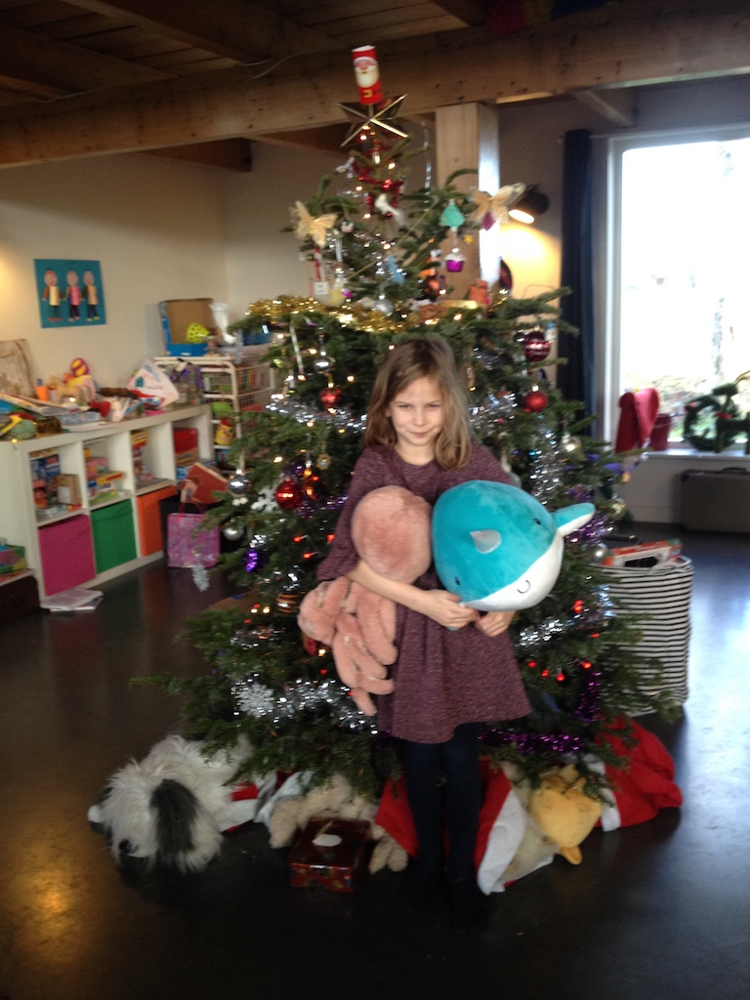
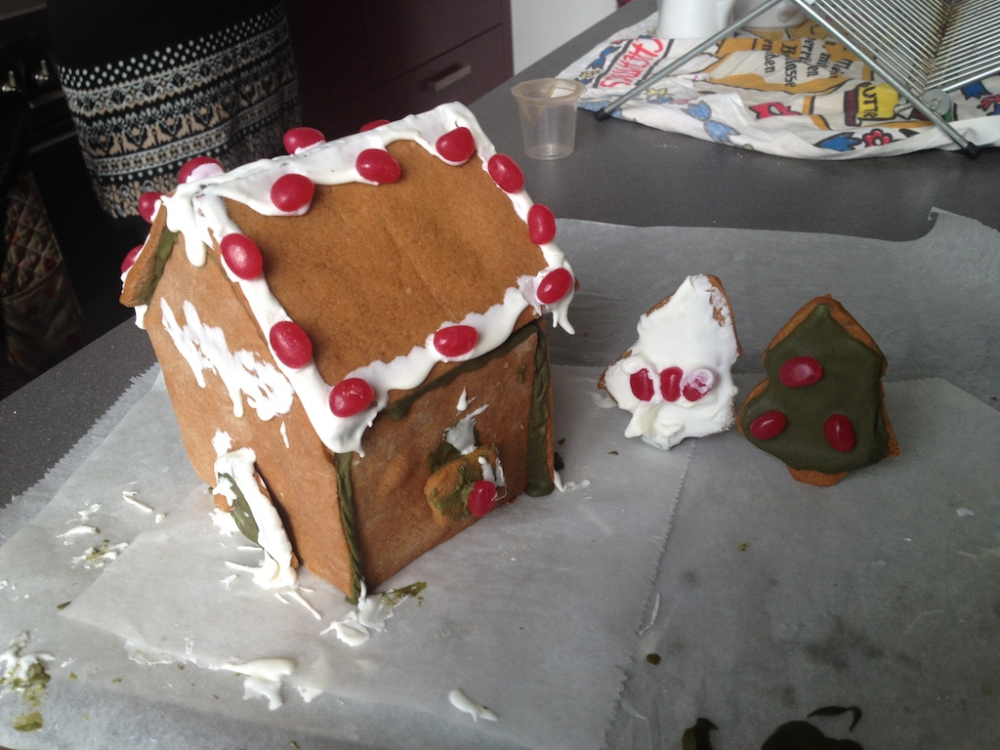
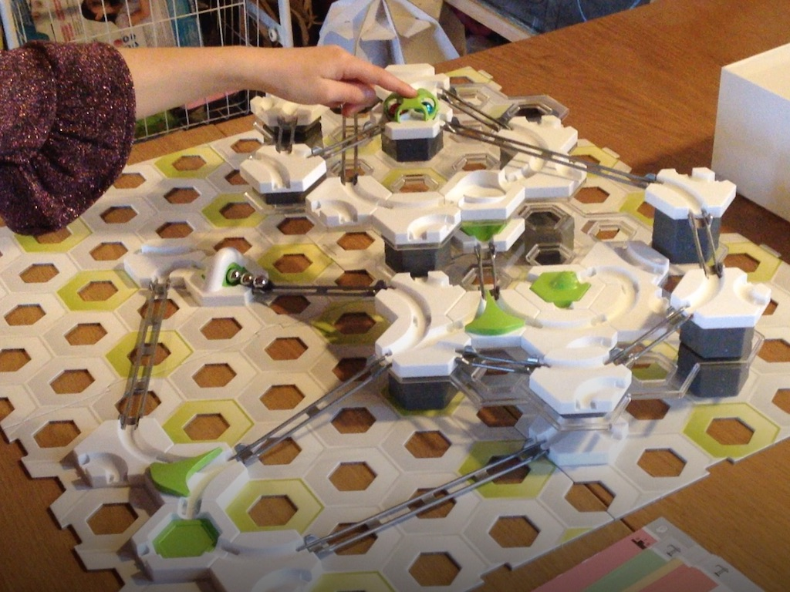
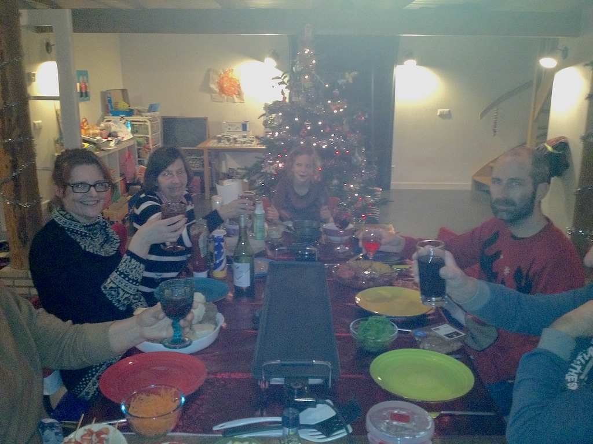
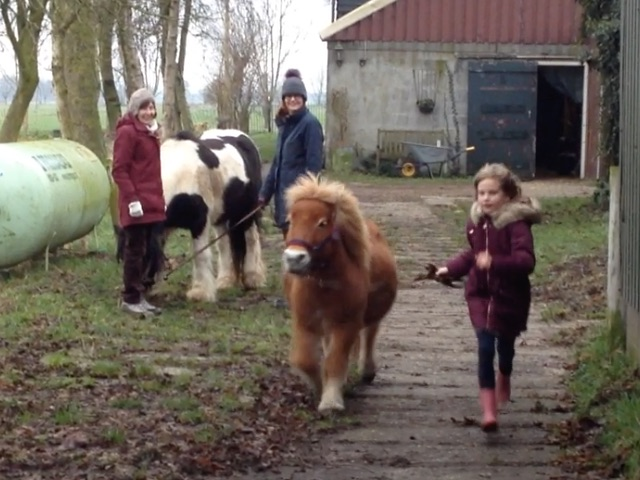
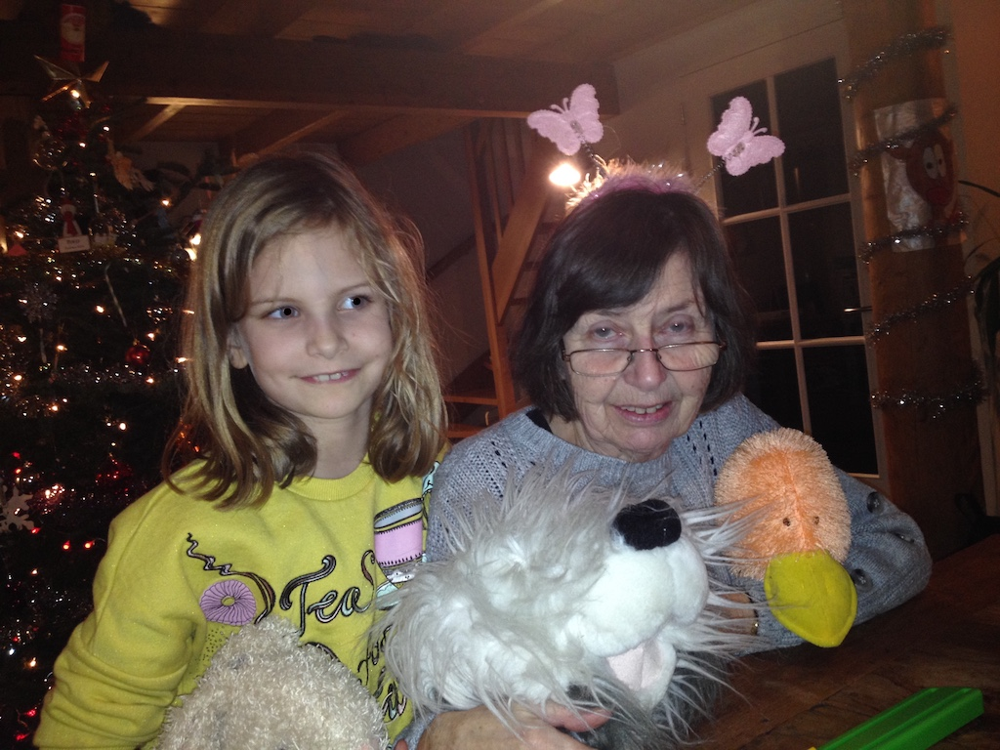

Monday 23rd December saw the start of our Christmas break (as if we needed a break). We spent most of the day travelling to Paul's. Our journey to Gatwick took an unexpected turn. We knew that the road north of Henfield was flooded, but we did not expect the road through Ashurst to be closed, so we went on to the A24, past Horsham and around the Crawley ring road. Since we parked int eh short-term car park we were quire early, only to find that our flight was delayed by half an hour. This went up to three quarters of an hour, but we arrived at Schiphol just after three. After a quick lunch we caught the train to Rotterdam. I had a slight misadventure on the escalator going down to the platform. When trying to move over to let someone pass I tripped with the case and fell backwards. But no harm was done. Then we found that Angela had not 'tapped' her ov-chip card correctly to buy the supplement (she blamed me for rushing her), but the ticket inspector let us off. Paul collected us from Capelsebrug. After a pizza dinner we played some games before Rowan's bedtime.
Christmas Eve and Christmas music has been playing for most of the day. It rained heavily over night and for some time during the morning. However, we were able to take the ponies for a little walk up the garden while Krista cleaned out their stables. Meanwhile, Angela and Rowan made the gingerbread parts of a house. After lunch we let the ponies free for a while in the paddock while Krista, Paul, Rowan and Flo went to visit Krista's grandmother. Then I helped them stick the house pieces together with icing that Rowan mixed. It was quite messy, as was the result, but Rowan enjoyed it.
Christmas Day (Eerste Kerstdag). After heavy rain over night the day became dry and the sun came out just as it was setting. As expected, we started by opening presents. We spent part of the day building various marble runs, although Rowan soon started following the instructions herself and then making up her own runs.
Later in the afternoon Greet and Wim came for dinner. We sat around the table cooking various pieces of meat on a hot plate in some small pans. It is a traditional way to cook a meal in the Netherlands. Angela went out with Paul and Flo for a walk after lunch.
Boxing Day (Tweede Kerstdag). For some reason we all slept late and still felt tired. However, it was a day for playing games and running the ponies up and down the drive. Also of eating up the left-overs from the previous days.
We decided to make our visit to Berkenwoude quite short, only three full days plus a part day at either end, so that on the one hand we did not outstay our welcome and on the other we did not get too tired. However, the time did go quickly and today was our journey home. We left (or rather Paul et al took us to Capelsebrug) a little before ten. We then did the usual of Metro to Rotterdam Centraal, train to Schiphol, plane to Gatwick and car home, arriving at about three, UK time. A total journey time of six hours.
Everything was on time and by the time we'd had coffee at Schiphol we could check in our bags. Then by the time we'd had some lunch it was almost time for our flight. We were thirsty when we got to Gatwick, so stopped for a cup of tea before crossing to the short-stay car park and driving home.
© David James 2020 Last updated: 5th February 2020